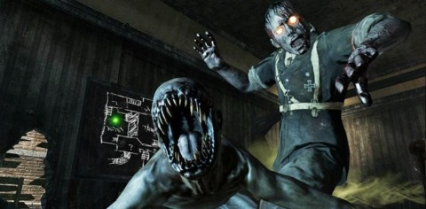

Zombies
Zombies, originally known as Nazi Zombies, is a game mode mostly appearing in Treyarch games that first appeared in Call of Duty: World at War. It became highly popular upon the game's release, and returned in its sequels Call of Duty: Black Ops, Call of Duty: Black Ops II and again in Call of Duty: Black Ops III. In Zombies, players face zombies of various nationalities depending on the location of the map, including Germans, Americans, Russians and Asians. Zombies content is only considered canon in its own universe.
Up to four players, eight on Grief, must survive endless waves of attacking zombies, earning points from killing or damaging zombies and repairing barriers. These points can be used to purchase weapons and Perk-a-Colas in the process, or unlock new areas and activate other special objects. Zombies enter the player-accessible area of the map via windows, holes in walls, or climbing out of a "dirt" surface, which are initially barricaded but will be rapidly demolished by zombies. They can be repaired, however, with the exception of the dirt surfaces. There is no limit to the number of rounds; the game will end when all players have been incapacitated or killed by the Zombies, or if the player completes Pop Goes the Weasel on Mob of the Dead, or Little Lost Girl on Origins. Zombies become stronger, faster and in higher numbers upon the completion of each round, forcing players to make tactical decisions about point spending and progressing through the map. On occasion, zombies will drop power-ups such as Max Ammo, Nuke, or Insta-Kill upon their death, making the round easier.
Altogether, Zombies consists of twenty-one maps; the first, second, fourth, fifth, seventh, nineteenth, and twentieth feature Nazi Zombies, while the third and twenty-first features Imperial Japanese Army, the sixth features American civilians, military and scientists, the eighth features Soviet scientists, cosmonauts and military, the ninth features Siberian sailors and divers, the tenth features Himalayan civilians, the eleventh features Astronauts and American military, the twelfth features various American civilians, the thirteenth map features Russian Spetsnaz and American Zombies of various afflictions, including zombies wearing hazmat suits, the fourteenth features Chinese civilian and military Zombies, the fifteenth features American prisoners and guards, the sixteenth features Western barmaids, prospectors and cowboys in a continentally-shifted Angola, the seventeenth features WWI era German soldiers, Crusaders and Medival Templars in occupied France, and the eighteenth features 1940s American civilians.